$$qf_commondoc_header.start$$ $$qf_commondoc_header.end$$
Preface
Performing an imFCS data evaluation for a cell is very similar to a fit in a solution sample. But still some peculiarities should be taken care for. This document describes a full data evaluation for a SPIM-FCS measurement, performed in a cell. The same, methods can be also used for data acquired on a TIRF microscope or any other widefield imaging mode, which is usable for FCS measurements. For such microscopy schemes, only a different fit model has to be selected (e.g. one of the TIR-FCS models for a TIRF measurement).
The cell used throughout this tutorial is a HeLa cell expressing eGFP tetramers. The pixel size was 400nm and the PSF parameters were: $$math_w_{z}=1126nm$$ and $$math:w_{xy}=620nm$$. The data was acquired on a home-built SPIM setup.
$$note:The data in this tutorial is available in EGFP4x_2013_08_01.zip from http://www.dkfz.de/Macromol/quickfit/examples.html
If you use that data, download the ZIP-file and extract to your harddisk. Then you can work on those datasets.$$
Prerequesites
- This tutorial assumes, that you have acquired a SPIM or TIRF measurement on a fast camera, i.e. with a framerate, that is sufficient to resolve the diffusion of your protein of interest. For most larger proteins in the cytosol of a cell, we found imaging speed of 2000fps and above a good choice. The data should be stored in an image format, that can be read by QuickFit. Currently mostly TIFF image series are supported, so we assume that the data is stored as such, i.e. a single TIFF files, containing the complete image series. If you have each frame as a separate file, you can load such an image series into imageJ and store it as a TIFF file. In addition, the frames in the TIFF should not be compressed, as this will improve the reading speed.
- In addition, we assume that you have also acquired a short time-series of the background signal (usually 500-2000 rames are enough) of the image sensor. Typically this can be acquired shortly before the actual measurment by simply switching off the illumination source. The background series has to be acquired with the same camera/mictoscope settings as the actual measurement. If you don't have such a background series, you should at least determine the offset, that your camera adds to the signals (usually 100 counts) and subtract that from the data during correlation.
- In addition you need some knowledge about the pixel-sze of your microscope and the size of the PSF. The latter can be determined in various ways:
- you can perform a z-stack with sub-difractive fluorescent beads and from that determine the longitudinal size $$math:w_z$$ and the lateral size $$math:w_{xy}$$. Typiccaly both sizes are given as 1/e half widths in nanometers to the models, but to be sure, check the help/definition of the fit model that you use. The logitudinal size is only required for SPIM-FCS measurements. For TIRF measurements, the lateral PSF size is sufficient.
- A more accurate option is to perform an imFCS focus calibration to determine the laterals PSF size $$math:w_{xy}$$. For SPIM measurements, the longitudinal PSF size $$math:w_z$$ can either be estimated from a beadscan (see above), or from the light-sheet width $$math:w_{LS}$$ and the expected depth of field of the detection objective $$math:w_{Obj}$$ as$$REF_SPIMFCS_CAM$$ $$bmath:\frac{1}{w_{z}^2}=\frac{1}{w_{LS}^2}+\frac{1}{w_{Obj}^2}.$$
Correlating the Data
- start QuickFit and open up the correlation dialog by clicking on Data Items | Insert Raw Data | imaging FCS | correlate images and insert. A dialog will pop up, which looks like this:

- Click on
 to select the input image series. A file-selection dialog pops up, in which you have to select the input image series. If your TIFF-file is not compressed, make sure to select the "tinyTIFF" file format, as this is faster than the libTIFF-variant. If the file cannot be read by tinyTIFF, you can still revert to libTIFF.
to select the input image series. A file-selection dialog pops up, in which you have to select the input image series. If your TIFF-file is not compressed, make sure to select the "tinyTIFF" file format, as this is faster than the libTIFF-variant. If the file cannot be read by tinyTIFF, you can still revert to libTIFF.
When you selected the file, click on OK. Now QuickFit will read some basic properties of the file, such as its metadata (width, height, OME-metadata, ...). It will also determine the number of frames in the file, which might take a while, since QuickFit often has to read the whole TIFF-file in order to establish the number of frames, it contains. When all these steps are done, the other widgets in the correlator dialog will be activated.
You can use the Preview button to view the first frame in the TIFF file, which sometimes helps in determining the further parameters.
- Enable the check-box "camera description" and provide the pixel size $$math:a$$ of your microscope (in the image plane, i.e. $$math:a=a_{cam}/M$$, where $$math:a_{cam}$$ is the pixel size of the camera chip and $$math:M$$ is the magnification of your detection microscope objective.
- Use the input fields frame rate or frame time (1/frame rate) to provide the frame rate of your acquisition.
- Background Correction:
- If you have a background image series, select "remove background image and offset" from the combobox, set the "subtract offset" field to 0 and select the background image series for your acquisition. This part of the dialog should then look like this:
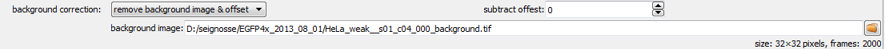
- If you don't have a background series, select "remove offset" and enter the camera offset, or select "remove minimum counts & offset" and set the offset to 0. In the latter case, the correlator will remove the smalles pixel value it can find in the measurement. This is useful, if you acquisition e.g. contains some darkened pixels at the borders.
- You can crop the image series both in space (using the cropping options) and in time (using the "frame range" widgets). Also yo can perform a binning. For the sake of this example, we set binning to 1 and do not use any cropping. If you used a camera with very small pixels (basically significantly sub-diffractive), e.g. in acquisition with an sCMOS-camera (6μm pixel size) at high magnification (e.g. 60x), it may make sence to increase the binning, until you have pixels of the same size as the PSF.
- Now you will have to choose a bleach correction method. For cell data, usually "1-exponential(poly4)" is a good choice. For very low bleaching, a simple single-exponential (1-exponential, lmfit) might also be enough. The "number of frames to average over" should be in the range of $$math:N_{frames}/25$$ and is usually already set, when the file is read.
- If your Acquisition was performed in DualView mode (which we do NOT cover here), you can set that under "DualView mode". For a single-channel FCS measurement, select "none".
- In the correlation functions, only select the ACF for each pixel, which will calculate only an autocorrelation fucntion. Spatial and two-color cross-correlation fucntions are covered in other tutorials.
- You can cut up the image series into segments. For each of these segments a correlation function is calcuated and you will end up with an average +/- standard deviation of these correlation functions. This helps in two respects:
- it reduces the bleaching, since each segment is shorter than the full image series
- the standard deviation can be used to weight the fits and obtain more accurate fit parameters.
- As correlator, choose "Direct Correlation, with Averaging". The correlator parameters should be:
P=16, m=2and S should be set, so the maximum lag time is just a bit larger than the segment length. The settings the could look like this: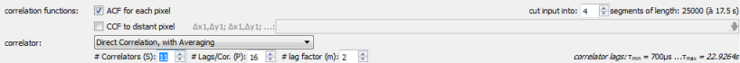
- Finally you will have to provide the number of frames to average over for the statistics and the video. Both should be choose in a way, that you end up with approximately 1000 frames in the video/statistics (see rhs part of the window). Usually these parameters are also already set automatically, when QuickFit scans the input file.
- Here is a screenshot with all parameters set:
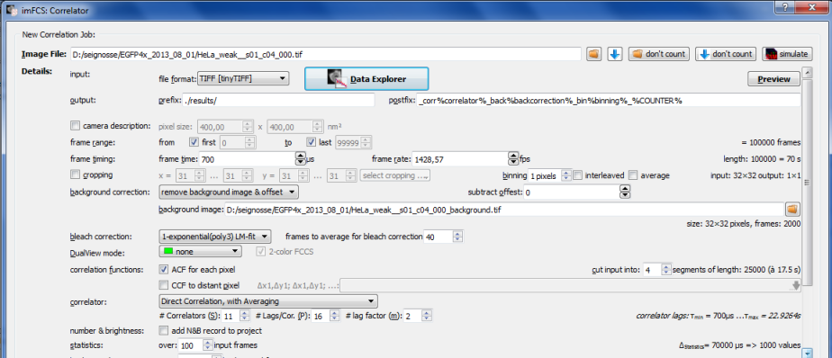
- Finally you can add a correlation job to the list of jobs by clicking "add job". This will add a line to the list at the bottom of the window and QuickFit will start to process your file.
We will now perform a second evaluation of the same input file, but with a different binning settings. This will allow us to compare the effect of binning in this tutorial, as this sometimes helps in evaluating the data from cells, especially when you used a dim fluorophore, such as mRFP or mCherry, or low excitation power (or a very fast frame rate for tha matter):
- While the last correlation task is running, click on the symbol
 to reload the file (this button simply loads whichever filename is provided in the input line at the top of the correlator window). Now all widgets should be active again and all settings should still be set, as before.
to reload the file (this button simply loads whichever filename is provided in the input line at the top of the correlator window). Now all widgets should be active again and all settings should still be set, as before.
- set the binning to 2
- Click again on "add Job". A second line will be added to the list at the bottom of the window.
When both correlation jobs are finished ( ), you can click on close, which will close the widnow and add the results to the current project. The project will look like this:
), you can click on close, which will close the widnow and add the results to the current project. The project will look like this:
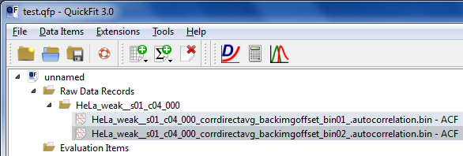
The first raw data file contains the non-binned data and the second file the 2x2-binned (indicated by the name part _bin02_.
Inspecting the Data & Setting Masks and Background
- Double-click on the first raw-data record (RDR). An editor for the correlation data will pop up. In this editor, go to the tab "Parameter Image" It will look like this:
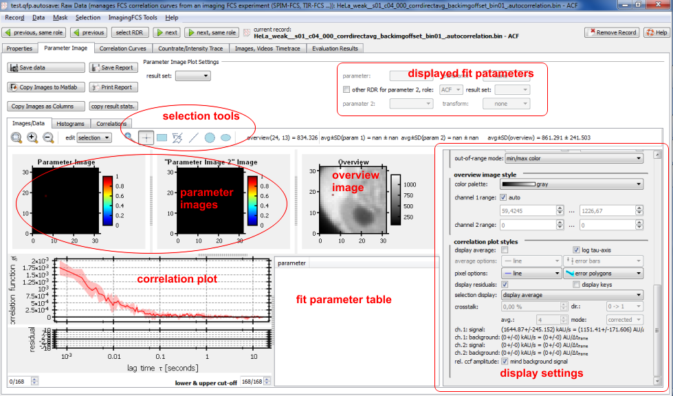
On the rhs of the window, you can set the appearance of the data in the left part. If it doesn't look, as in the image above, set the settings in the section correlation plot style, as depicted above.
On the lhs you have a display of several data items:
- In the upper part, three images display two fit parameter maps ("parameter image 1/2", still blank since we didn't do a fit yet) and the overview intensity image on the right.
- Below that you see the correlytion curve associated with the currently selected pixel (simply click somewhere in the overview image window).
- Next to the correlation plot, you can see the fit parameters of the currently selected pixel. Also this table is currently still empty, as we didn't do a fit yet.
- On the rhs of the window you find several options and widgets, that allow to change the appearance on the left and to work with masks and pixel selections.
- You can now click on different pixels in your cell to determine how your correlation fuunctions look. Here is an example of a good function:
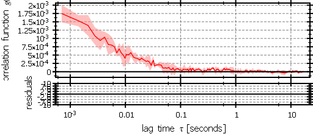
 It nicely decays to 0 for large lag times and has a small standard deviation (light-red area around curve). If you click on a pixel at the border of the cell, you tyoically see a curve like this:
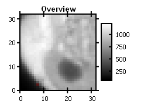 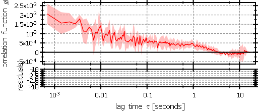
Here, the cell might have moved a bit during the acquisition, since the curve has a significant long-lag-time component. Outside the cell you will get correlation curves, that only contain noise:
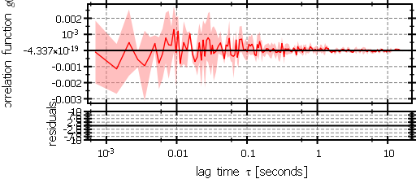
It nicely decays to 0 for large lag times and has a small standard deviation (light-red area around curve). If you click on a pixel at the border of the cell, you tyoically see a curve like this:
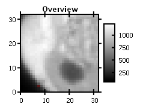 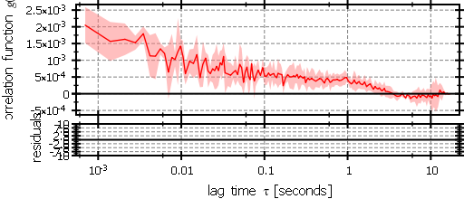
Here, the cell might have moved a bit during the acquisition, since the curve has a significant long-lag-time component. Outside the cell you will get correlation curves, that only contain noise:
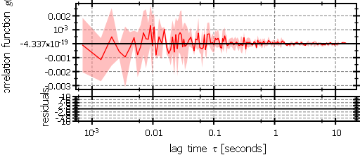
- Now we will generate a mask, which masks out pixels, which are outside the cell:
- Click on Mask | mask by overview. A new window will pop up, which allows to set the mask, based on a threshold on the overview image intensity.
- Set the "threshold" to a value, so the image looks as in the example below:
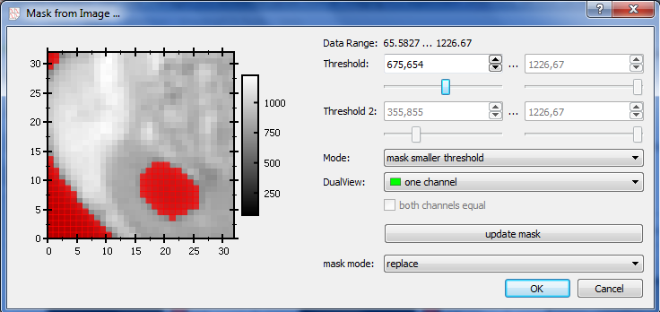
Note that also the nucleolus (dark spot in the center of the cell) is masked out.
- Click on OK, the mask will also be set in the imFCS RDR editor:
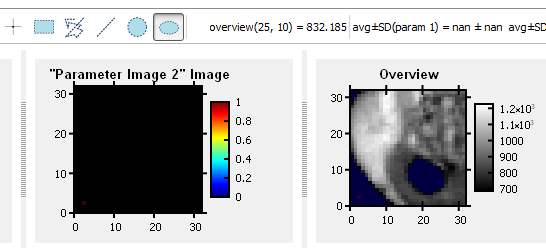
- now select the ellipse selection tool above the parameter images (
 ) and use it to select the nucleus in the overview image:
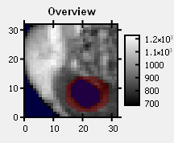
) and use it to select the nucleus in the overview image:
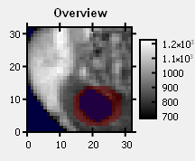
- Now click on Mask | unmask sel., which will remove all selected pixels (red) from the current mask (blue). The Overview image should now look like this:
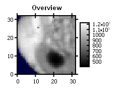
- If you want to quantify concentrations with FCS, it is important to perform a good estimation of the background intensity. Simply subtracting the camera offset is usually not enough, since the microscope often adds an additional unspecific background. To overcome this problem, you can estimate the true background signal from an average over all masked pixels. This can be done by clicking on Mask | set background from masked.
The background intensities will be stored as properties in the record, which can be seen in the first tab "Properties":
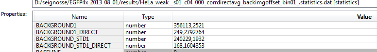
- Finally you can also check the video, that the correlator created for the image series. This is accessible in the tab "Images, Videos, Timetraces".
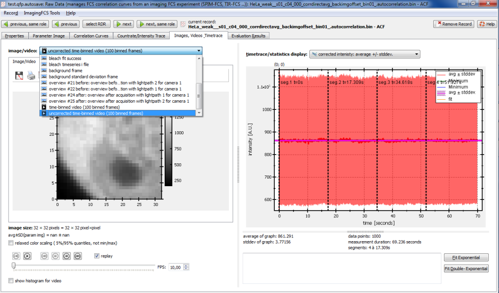
In that tab: select the "uncorrected time-binned video" and play it back and forth with the controls at the bottom. If the cell does not move too much, the measurement is OK and can be used. If the cell moved a lot during the measurement, it should be sorted out.
Finally repeat the steps above (masking & background) for the 2x2-binned dataset in the project.
After you completed these steps, please close all RDR editor windows, since fits can be very slow (and QuickFit might crash) if the fitted file is still opened!
Fitting the Dataset
In this section we will finally fit the imagingFCS datset:
- Add a fitting object to the project. This is done by clicking Data Items | Insert Evaluation | imFCS Curve Fitting. The project will now contain an additional entry, on which you have to double-click in order to open the fit window:
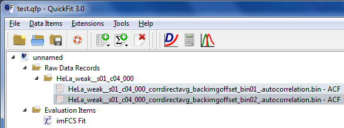
- In the fit editor you will see a window like this:
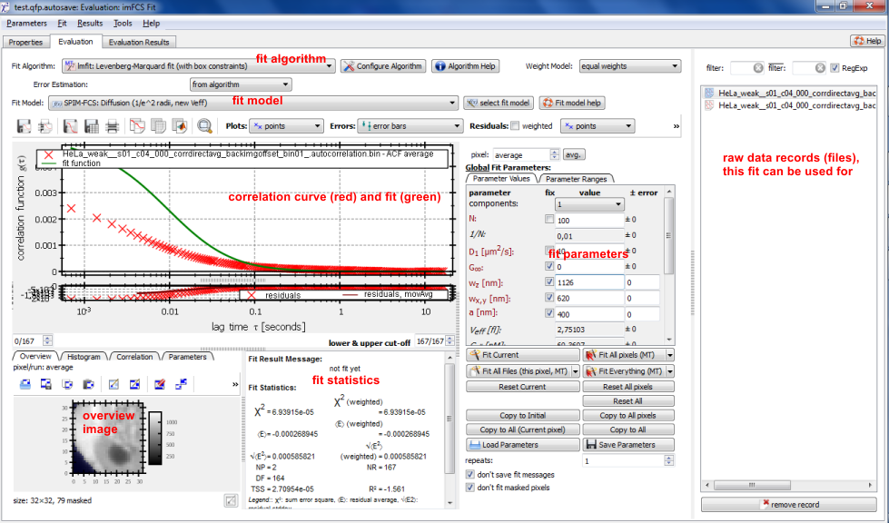
On the rhs of the window, you can select the raw data record (file), that should be displayed on the left. On the bottom-left, you see an overview image, which allows you to select the currently displayed pixel. Above that the correlation function in that pixel is displayed along with the current fit and the residuals (difference bewteen fit and data). The current fit parameters are displayed on the right of the correlation function. In the top of the window, you can select the fit algorithm (lmfit is usually fine) and the fit model, that are used.
- For this tutorial, you should use the fit model
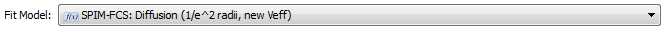
This is a simple (multi-component) fit for SPIM-FCS data. The PSF-parameters are given as 1/e-halfwidths.
- Now you should select a representative pixel for the cell, by clicking on it in the overview image. If you applied a proper mask and do not expext to much variation over the cell, also the average over all pixels is a good choice (click on the avg. button: 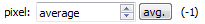)
- After selecting the model and a representative pixel, you should first provide the focus parameters to the model. To do so, enter the values ($$math_w_{z}=1126nm$$ and $$math:w_{xy}=620nm$$ in the case of the example, shown in this tutorial) into the fields
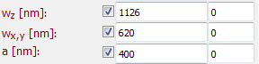
- Now click on , which will fit the currently displayed pixel and inspect the results. Often it looks like this:
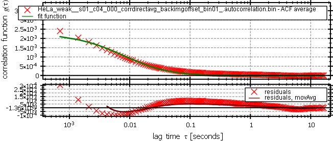
The S-shaped residuals indicate, that an additional component (or species) with a diferent diffusion coefficient is present in the sample. Therefore you should add a second component to the model, by selecting
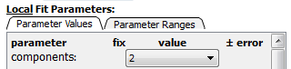
A second click on will redo the fit, now with 2 diffusing components. The new fit result will look significantly better:
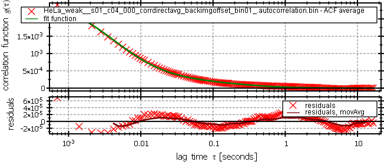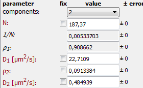
The remaining wavy shape of the residuals is caused by the fact, that we fit the average over all pixels and that the smaple is not homogeneous. The two components in this fit phenomenologically describe the effect of hindered diffusion, which is often found in living cells.
- In order to allow for reliable fits for all pixels, it is often useful to adapt the parameter ranges (especially for the diffusion coefficients) to the dataset. Therefore, change the parameter ranges as follows:
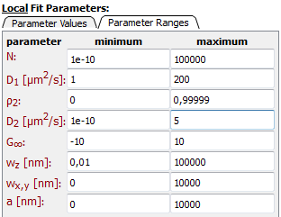
Now the first (fast) diffusion coefficient may only scale between 1 and 100μm/s, which can be estimated form teh known size of the EGFP tetramer. The slow component, which represents the anomality of the motion and the complexity of the medium, may be 2μm/s at the most, which has turned out to be a good range for most cases of free diffusion in a cell.
- Now you want to use the current fit parameters as preset for all other pixels. This is achieved by clicking on . Then you can perform a fit for all pixels in all raw data records, by clicking 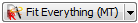, or for all pixels in the current raw data record, by clicking 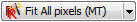. While the fit is arunning, a progress dialog is displayed, which will disappear, when the fit of all pixels is finished.
- The fitting stage is now complete and you can close the fit evaluation editor.
Inspecting the fit results
Now we can inspect the fit results and draw maps of the fit parameters.
- Double-click again on one of the two raw data records in the projects and go to the "Parameter Image" tab, as soon as the RDR editor opens up. The editor will now look like this:
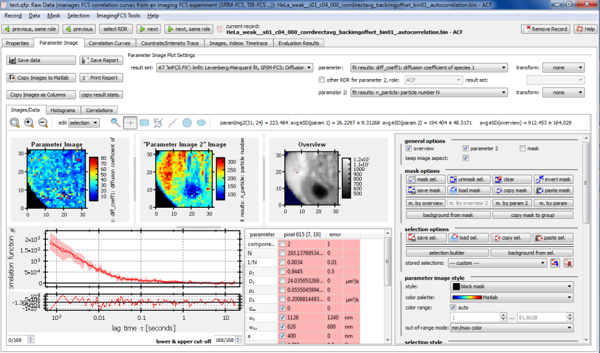
At the top of the window, you can already see the maps of the first (fast) diffusion coefficient and the map of the particle number. If you click on any pixel in one of the images, the according autocorrelation curve, fit and fit results will be displayed below. If you don't like the currently used color coding of the plots, you can change it in the section "parameter style" and "parameter 2 style" on the rhs.
- In order to obtain histograms of the fit parameters, you can switch over to the "Histograns" tab:
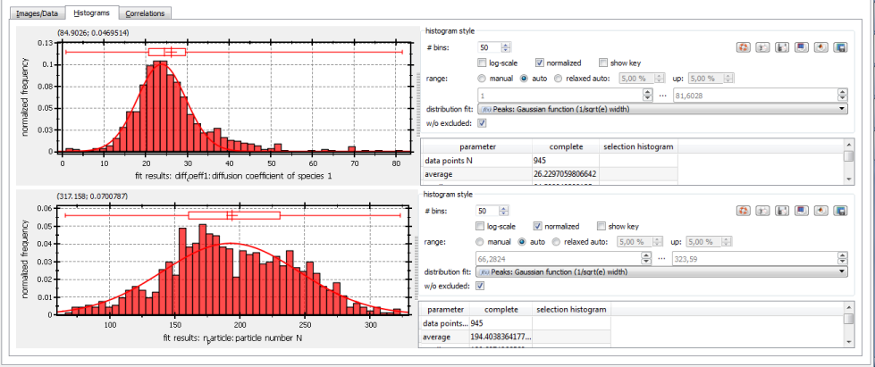
Here you can e.g. obtain the statistics of the fast diffusion coefficient. Its mean and standard deviation are e.g.: $$math:(26.2\pm9.3)\mu m^2/s$$, which can be read from the table on the right of the histogram.
- The third tab "Correlations" allows to create a scatter plot of the two displayed fit parameters against each other or versus the image intensity, pixxel position etc. The following examples show that there is now correlation between the fast diffusion coefficient and the particle number
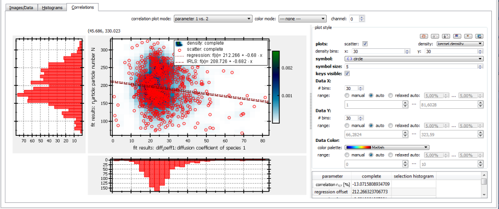
and a strong correlation or $$math:74\%$$ between the particle number and the image intensity:
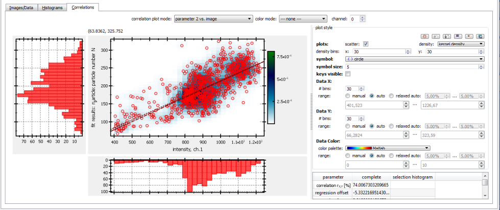
- You can also see from this data, that diffusion is significantly slowed down in the nucleus. To do so, select the parameters diff_rho2 (fraction of slow component) and diff_coeff2 (slow diffusion coefficient) as displayed parameters:
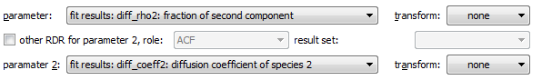
The fraction of the slowly diffusion component is significantly increased in the nucleolus:
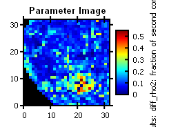
- This effect can be further quantified:
You can use the ellipse selection tool () to select the pixels in the nucleolus:
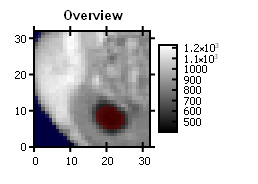
If you now switch back to the "Histograms" tab, the plots will contain two histograms: One covering all pixels (red) and one covering only the selected pixelsn (magenta):
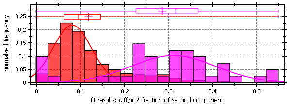
Also here you can see the significant increase of this parameter in the nucleolus.
References
$$references$$